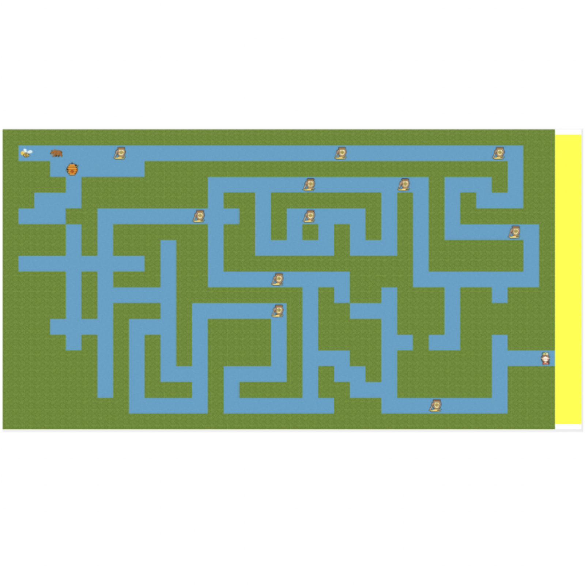
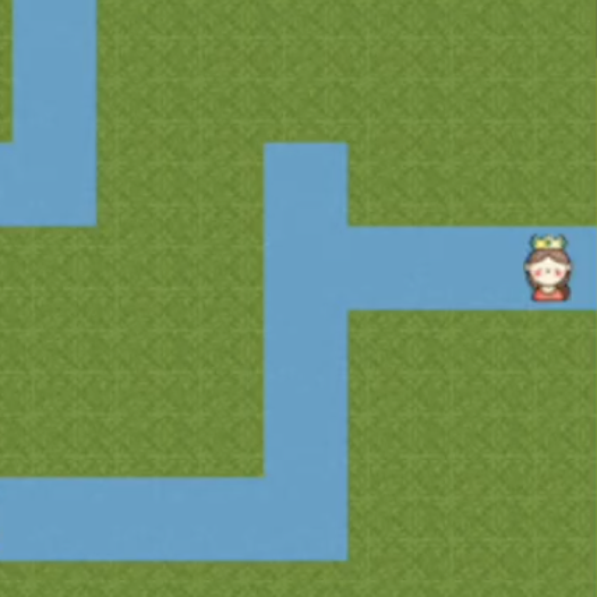
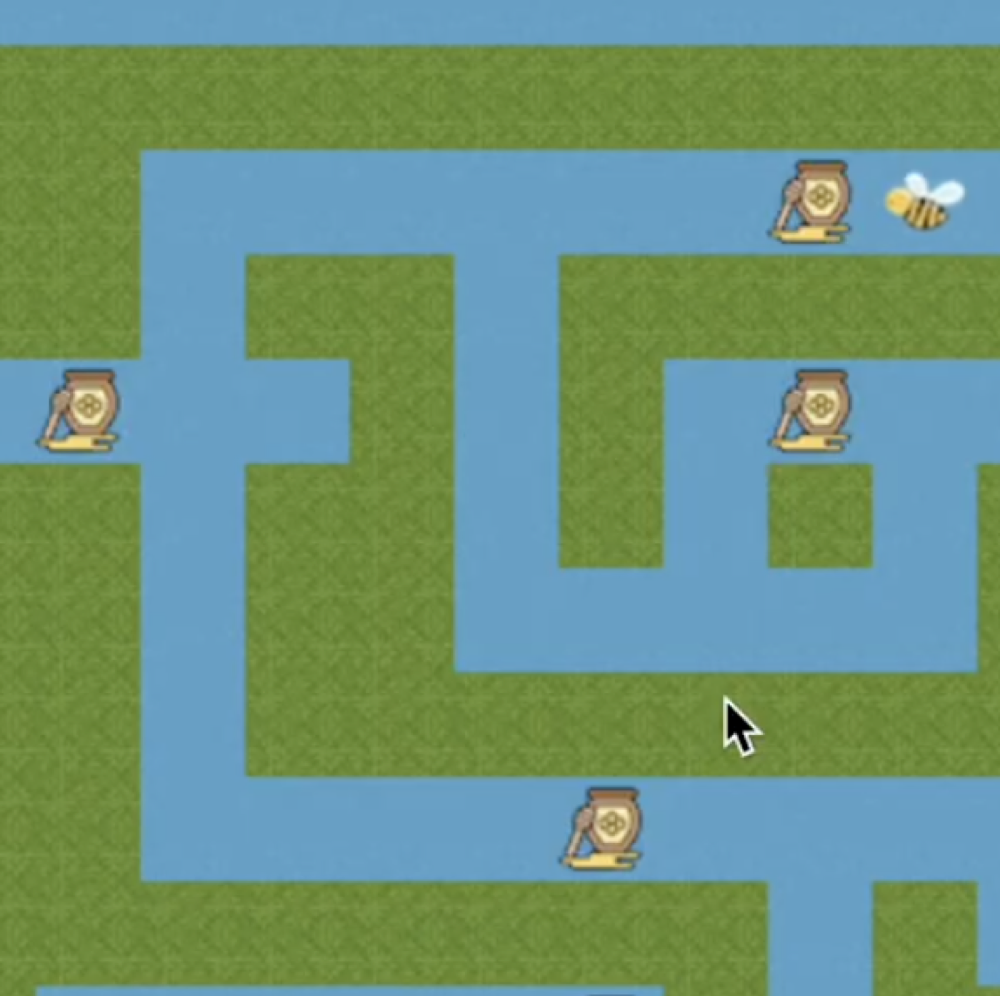

Bee Race
The Bee Race was a project completed using the Pyret programming language. It is a standard maze-race game in which a player controls a bee as it moves through the maze, collecting honey to regain health and racing to save a princess at the end.

Data Type Lessons
Initially, the data types we proposed were quite clunky. We defined many individual values within our data types, before realizing that we could have created additional data types to both clean up our structure and reduce the number of individual adjustments required when making changes. The revised data type solution also excluded constant values, such as the maze itself, which we had mistakenly included in the game state.
Lessons Learned
Through this project, I learned the importance of clean and readable data organization. This was the largest project I had completed to date, and having clear, well-structured data type definitions made working through complex tasks much easier. It reinforced that when tackling a large project, thoughtful data organization early on plays a major role in long-term success.

